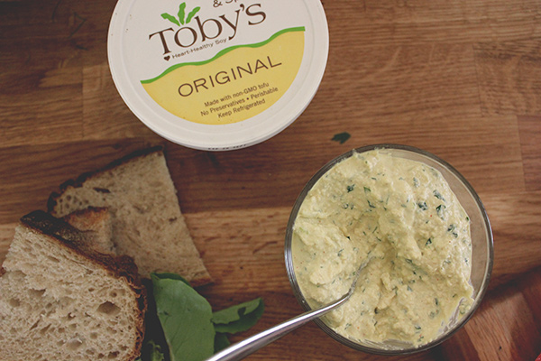

Tofu Paté

Creamy, dreamy & oh so easy
Call it a paté, dip or spread. This stuff is fanastic as a base in sandwiches piled high with crunchy veggies
or as a creamy, slightly zippy dip for chips, crackers or crudites. And bonus, it is also quick to prepare!
Ingredients
- 1 package (14oz) of extra firm tofu
- 2 ribs of celery
- 1/2 of a medium white, yellow or sweet onion
- 2/3 cup mayo
- 1 TBS dried parsley
- 2 tsp powdered mustard
- 2 tsp nutritional yeast
- 1 tsp salt
- 1/2 tsp tumeric
- 1/2 tsp garlic powder
- 1 pinch cayenne
Steps
- Press the tofu in advance or if you're in a rush, while you prepare the rest of the recipe.
- Finely chop the celery and onion.
- In a good size mixing bowl, stir all the seasonings into the mayo. Then mix in your minced vegetables.
- Crumble the tofu into the mixing bowl and stir everything together well. If you like this texture, you can be done here.
If you want a smoother texture, throw it into a food processor until you reach the creamier texture you desire. Personally,
I like to throw half of the spread into the food processor and then stir the creamier version into the chunkier version for
the best of both worlds.
- Let your pretty paté rest in the fridge for at least an hour to let the flavors meld. Stir again when ready to serve.